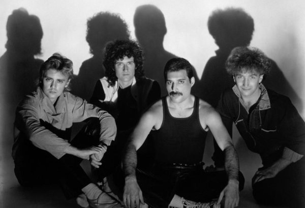

Se puso a la venta como "Bohemian Rhapsody" y ha sido el tercer sencillo más vendido de todos los tiempos.
Tiene una estructura inusual, más similar a una rapsodia clásica que a la música popular.
La canción no posee estribillo y consiste en seis secciones: una introducción a capela, una balada, un solo de guitarra, un segmento operístico, una sección de rock y una coda que retoma el tempo y la tonalidad de la balada introductoria. El solo de guitarra de esta canción ha sido considerado el vigésimo mejor de todos los tiempos
